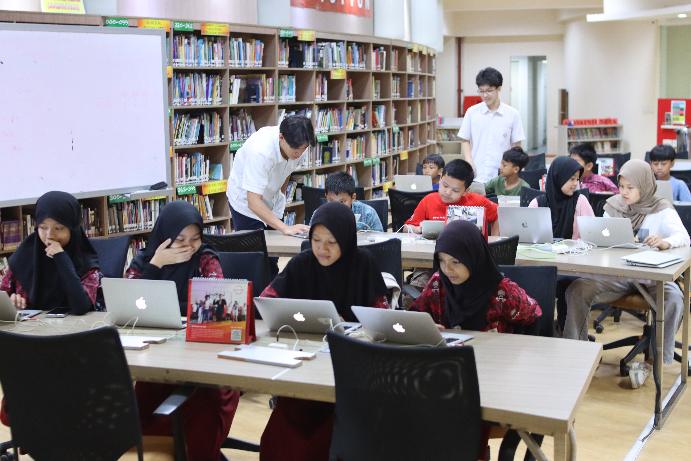
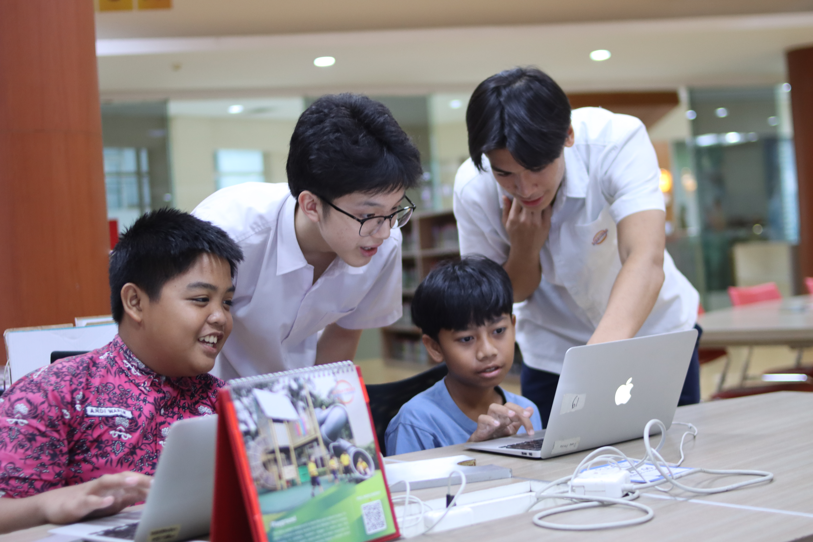

Code4Community,
A Sinarmas World Academy Based Non-Profit
We empower students with essential technology skills through comprehensive mentorship programs, fostering creativity and digital literacy.
200+
Students Mentored
10+
Workshops Held
100%
Volunteer Driven

Our Initiatives
We bridge the digital divide through targeted programs designed to inspire and educate.
Workshops/teaching
We teach fundamental computer skills to ensure no student is left behind in the digital age.
School Partnerships
We partner with schools to integrate digital literacy into their existing learning environments.
Donations
We bridge the digital divide by providing students with the tools they need to learn, grow, and explore technology.
About Us
We are a student-led non-profit organization based at Sinarmas World Academy in Indonesia, dedicated to expanding access to digital literacy and coding education for young learners. Through workshops, community initiatives, and educational programs, we strive to empower students with the skills needed for the future.
History
Code 4 Community began as a small school club with a big vision: to make technology education more accessible to everyone. What started as a group of passionate students has grown into a growing non-profit initiative that continues to expand its impact across local communities.
Our Mission
To democratize access to technology education by providing high-quality, free mentorship and resources to underrepresented communities, fostering a future where every child has the opportunity to become a creator of technology.
Our Vision
A world where technology serves as a bridge rather than a barrier, creating inclusive communities where innovation thrives through diversity, collaboration, and shared knowledge.
Ready to Make an Impact?
Whether you're a student eager to learn or a professional ready to mentor, there's a place for you in our community.